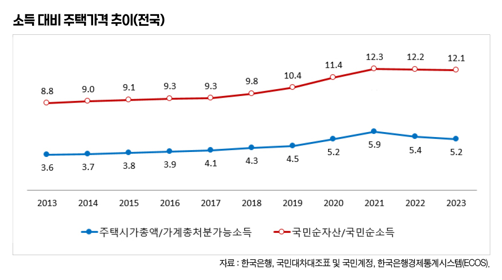
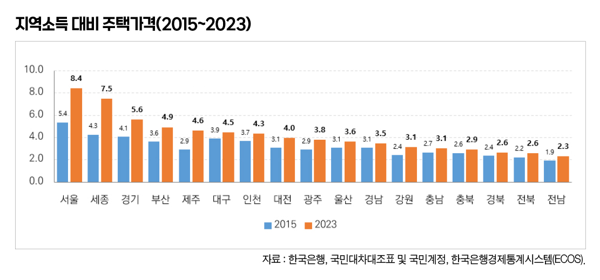
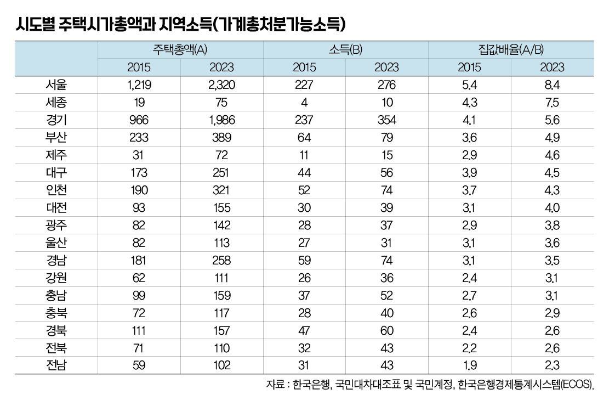

박영삼의 통계로 보는 노동
한국은행·통계청, 지역별 주택시가총액 첫 발표 … 2023년 기준 서울 8.4배, 세종 7.5배
한국은행과 통계청은 지난달 22일 국민대차대조표 기준년도를 2015년에서 2020년으로 개편하는 2차 작업을 완료하면서 시도별 주택시가총액(2010～2023) 통계를 처음으로 공개했다. 지금까지는 전국 주택시가총액만 발표해 왔는데 지역별 주택시가총액을 제공하기 시작한 것이다.
발표가 나자 언론은 서울의 주택시가총액이 2천320조원으로 전국 시가총액 6천839조원의 34%를 차지하고, 경기·인천을 합한 수도권이 4천627조원으로 전국 주택가격의 68%를 차지한다는 사실 중심으로 보도했다. 하지만 이번 개편 작업이 국민소득 통계의 기준시점을 2020년으로 변경하는 작업의 일환으로 진행된 것임을 감안하면, 지역의 주택가격을 지역소득 통계와 연결해서 볼 필요가 있다.
가구 차원에서 소득 대비 집값, 즉 주택가격배율(PIR) 개념이 있다면 국가 수준에서는 ’국민소득 대비 주택가격 배율’이 유용한 지표로 사용된다. 마찬가지로 지역소득 통계를 활용할 경우 바로 이 ’소득 대비 주택가격 배율’을 확인할 수 있다.
우선 전국 수준의 소득 대비 주택가격 배율은 2023년 전국 주택시가총액 6천839조원에 국민소득 계정의 가계총처분가능소득 1천316조원을 대입해서 구할 수 있다. 총처분가능소득 대비 주택가격은 5.2배 수준으로 2013년의 3.6배이던 것에 비해 크게 증가한 것을 알 수 있다. 그나마 2021년 이후 부동산 가격이 다소 하락하면서 5.9배에서 5.4배, 5.2배로 완화된 것이 현재 수준이다. 고정자본 소모를 제외한 국민순소득 대비 국민순자산 배율은 소득 대비 자산 배율을 표시하는 것으로 프랑스의 경제학자 피케티가 <21세기 자본>에서 말했던 ’자본-소득비율’과 유사하다고 할 수 있다. 우리나라의 이 비율은 2021년에 12.3배까지 크게 증가하다가 이후 역시 12.1배 수준까지 완만하게 감소하고 있는 상황이다.

그렇다면 지역소득 대비 주택시가총액은 지역별로 어떤 수준에 있을까. 한국은행은 지역소득 통계를 2015년치부터 제공하고 있는데 이번에 발표된 지역 주택시가총액과 연결해서 2015년과 2023년 두 해의 소득과 주택가격 통계를 살펴보기로 하자.
서울의 경우 주택시가총액은 2015년 1천219조원에서 2023년 2천320조원으로 8년 기간 동안 1천101조원(90.3%)이 증가했는데, 같은 기간 지역의 총처분가능소득은 227조원에서 276조원으로 49조(21.7%)원 증가한 것에 그쳤다. 이로 인해 이 기간 서울의 소득대비 주택가격은 5.4배에서 8.4배로 높아져 집값 배율이 가장 크게 상승한 것으로 나타난다. 서울 다음으로 소득대비 주택가격 비율이 높아진 지역은 세종시다. 2015년 소득대비 주택가격은 4.3배였는데 2023년에는 7.5배로 폭등한 것으로 나타난다. 이 기간 세종시의 주택시가총액 상승률은 무려 130%에 달한다. 대신 지역소득 증가율이 매년 두 자리수를 기록하면서 소득 대비 주택가격 비율의 상승세가 서울보다 낮게 되었다. 다음으로는 제주지역이 소득대비 집값이 2.9배에서 4.6배로 상승했고 경기 지역은 4.1배에서 5.6배로 올랐다. 부산도 소득대비 주택가격 배율이 3.6배에서 4.9배로 크게 증가한 지역에 속했다. 이에 비해 충북·경북·전북 지역은 2.4~2.6배에서 2.6~2.9배 수준으로 올라 소득배율 증가폭은 크지 않은 편에 속했다.

지역마다 공통적으로 주택시가총액이 크게 증가한 시기는 2018~2021년이었는데 저금리로 인한 유동성 확장 시기에 소득 대비 주택가격 배율이 크게 상승했다. 다만 세종시와 제주도의 경우 2013년부터 이미 지속적으로 주택가격이 상승하던 상황이어서 다른 지역과는 구분된다.
한편 지역소득은 2018~2019년 시기에 평균 5% 이상 증가했지만 그 이후 2020년 코로나 팬데믹이 닥치고 2021~2022년 소득증가율이 계속 낮아지면서 소득대비 주택가격 배율이 상승하는 결과를 낳았다고 볼 수 있다. 이 과정에서 서울 등 수도권과 다른 지역 간의 주택가격 차이가 더 확대되는 결과를 낳았다고 볼 수 있다.

하지만 자산가격이 상승하고 부동산 국부가 커지는 것은 결코 다수의 국민들에게 반가운 소식이 아니다. 부동산은 국민들이 골고루 소유하고 있는 자산이 아니며, 자산불평등이 소득불평등보다 더 심하다.
2022년 12월말 기준 우리나라 가구의 경상소득 상위10%가 전체소득의 29.2%를 점유하고 있는 반면, 자산의 경우에는 2023년 3월 기준 상위10% 가구가 순자산의 43.4%가 점유하고 있고 부동산자산은 상위10%가 47.9%를 점유하고 있다(가계금융복지조사, 2024). 이런 상황에서 주택시가총액의 증가는 부동산 자산을 가진 소수의 사람들에게는 이익이 되지만 많은 빚을 안고 집을 사야 하는 사람이나 무주택자들에게는 ’주택가격 대비 소득’의 크기만 줄이는 결과를 가져 온다.
고려대 노동문제연구소 노동데이터센터장 (youngsampk@gmail.com)